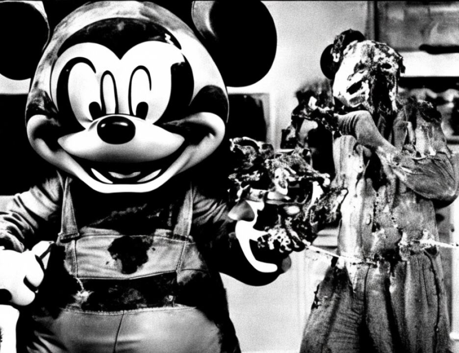

1 compartmentalize that effort. So I'm not unaware of those
2 considerations.
3 THE COURT: What is the government's position?
4 MR. FITZGERALD: We oppose the application. I would
5 note, first of all, that we think the victim impact evidence
6 that was admitted was properly admitted. It was not of
7 excessive scope.
8 I think in the McVeigh decision they found that the
9 number of witnesses and the length of the presentation of
10 victim impact testimony was appropriate.
11 THE COURT: I don't think Mr. Ruhnke is challenging
12 that. He is saying, regardless of whether it was appropriate
13 or not, it's something which had an impact on the jury.
14 MR. FITZGERALD: And your Honor, in that regard, I
15 would point out that, first of all, by bifurcating the trial,
16 nothing could be clearer to this jury, when they come back to
17 listen to the K.K. Mohamed penalty phase, that it is not
18 admitted against K.K. Mohamed. At any time that they would
19 deliberate, it would likely be about three weeks after they
20 heard the testimony of the victims from Nairobi.
21 THE COURT: Is there going to be victim impact
22 testimony at the K.K. Mohamed trial?
23 MR. FITZGERALD: Yes, your Honor.
24 THE COURT: And it will be essentially of the same
25 nature as that with respect to the Kenyans?
7281
1 MR. FITZGERALD: Yes, your Honor. And it will make
2 it clear, obviously, that that is the victim impact they are
3 to consider with regard to K.K. Mohamed, and not the victims
4 of the Nairobi bombing, with which he is not charged and none
5 of which will be referenced at the penalty phase of K.K.
6 Mohamed.
7 MR. RUHNKE: Your Honor, I would quarrel with the
8 government's description of the upcoming victim impact
9 evidence in the K.K. Mohamed penalty phase as it is of the
10 same nature as has been presented here. Fortunately, there
11 were no injuries that even remotely approached the seriousness
12 of the injuries that occurred in Nairobi.
2